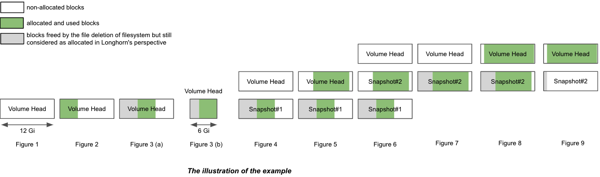
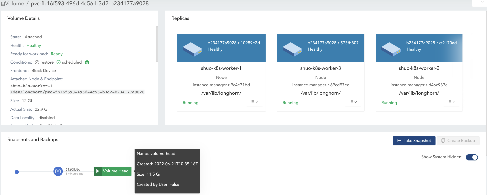

|
本文档采用自动化机器翻译技术翻译。 尽管我们力求提供准确的译文，但不对翻译内容的完整性、准确性或可靠性作出任何保证。 若出现任何内容不一致情况，请以原始 英文 版本为准，且原始英文版本为权威文本。 |
|
这是尚未发布的文档。 SUSE® Storage 1.12 (Dev). |
卷大小

卷 Actual Size

此值表示节点上每个副本使用的空间量（包括卷头和快照）。
由于所有历史数据（存储在快照中）和活动数据都包含在计算中，因此此值可能超过用户定义的名义大小。
SUSE Storage UI 仅在卷运行时显示此值。
示例
在示例中，我们将解释在一系列 IO 和快照相关操作后，卷 size 和 actual size 如何变化。
该插图展示了 一个副本 的文件组织。卷头和快照实际上是稀疏文件，我们在上面提到过。

-
创建一个具有单个副本的 12 Gi 卷，然后将其附加并挂载到节点上。请参见插图的图1。
-
对于空卷，名义
size为 12 Gi，actual size几乎为 0。 -
卷中有一些元信息，因此
actual size为 260 Mi，并不完全为 0。
-

-
在卷安装点写入4 Gi数据（数据#0）。由于为4 Gi数据在副本中分配的块，`actual size`增加了4 Gi。同时，文件系统中的`df`命令也显示了4 Gi的使用空间。请参见插图的图2。

-
删除4 Gi数据。然后，`df`命令显示文件系统的使用空间几乎为0，但`actual size`没有变化。
用户可以看到，默认情况下，删除4 Gi数据后，卷`actual size`并没有缩小。SUSE Storage是一个块级存储系统。因此，文件系统中的删除仅将属于已删除文件的块标记为未使用。目前，SUSE Storage不会自动/定期应用TRIM/UNMAP操作。如果您想进行文件系统修剪，请查看此文档以获取详细信息。
-
然后，重写4 Gi数据（数据#1），文件系统中的`df`命令再次显示4 Gi的使用空间。然而，`actual size`增加了4 Gi，变为8.25 Gi。请参见插图的图3(a)。
删除后，文件系统可能会根据文件系统设计重新使用最近删除文件释放的块，也可能不会，请参考 各种文件系统的块分配策略。如果卷的名义`size`为12 Gi，则最终的`actual size`范围将从4 Gi到8 Gi，因为文件系统可能会或可能不会重新使用释放的块。另一方面，如果卷的名义`size`为6 Gi，则最终的`actual size`范围将从4 Gi到6 Gi，因为文件系统必须在第二轮写入中重新使用释放的块。请参见插图的图3(b)。
因此，根据IO模式为承载重写任务的卷分配适当的名义`size`将使磁盘空间使用更加高效。

-
创建快照（快照#1）。请参见插图的图4。
-
现在数据#1已存储在快照#1中。
-
新的卷头大小几乎为0。
-
包括卷头和快照在内，`actual size`仍为8.25 Gi。
-

-
从安装点删除数据#1。
-
数据#1文件系统级别的删除信息存储在当前卷头文件中。对于快照#1，数据#1仍作为历史数据保留。
-
`actual size`仍为8.25 Gi。
-
-
在卷安装点写入8 Gi数据（数据#2），然后再创建一个快照（快照#2）。请参见插图的图5。
-
现在`actual size`为16.2 Gi，超过了卷的名义`size`。
-
从文件系统的角度来看，两个快照之间的重叠部分被视为必须重用或覆盖的块。但就SUSE Storage而言，这些块实际上是保存在另一个快照/卷头中的新块。请参见图6中的2个快照。
卷头仅保存卷的最新数据，而每个快照可能同时存储历史数据和活动数据，最多消耗空间。因此，卷`actual size`，即卷头和所有快照的大小总和，可能大于用户指定的大小。
即使用户不为卷创建快照，重建、扩展或备份等操作也会导致系统（隐藏）快照的创建。因此，在某些使用情况下，卷`actual size`大于大小是不可避免的。
-

-
删除快照#1并等待快照清除完成。请参见插图的图7。
-
这里SUSE Storage实际上将快照#1与快照#2合并。
-
在合并的重叠部分，较新的数据（数据#2）将保留在块中。然后一些历史数据被删除，容量缩小（在这个例子中从16.2 Gi缩小到11.4 Gi）。
-

-
删除所有现有数据（数据#2），并在卷安装点写入11.5 Gi数据（数据#3）。请参见插图的图8。
-
这使得卷头的实际大小变为11.5 Gi，卷的总实际大小变为22.9 Gi。
-

-
尝试删除卷的唯一快照（快照#2）。请参见插图的图9。
-
卷头后面的快照无法被清理。 如果用户尝试删除这种快照，SUSE Storage将标记快照为正在删除，隐藏它，然后尝试释放卷头与快照之间的重叠部分以供快照文件使用。 最后一个操作称为快照修剪，在SUSE Storage中可用，自v1.3.0以来。
-
由于在这个例子中，快照和卷头几乎占用了大部分名义空间，重叠部分几乎等于快照的实际大小。修剪后，快照的实际大小降至259 Mi，卷的大小从22.9 Gi缩小到11.8 Gi。
-

在这里，我们总结了与示例中磁盘空间使用相关的重要事项：
-
未使用的块不会被释放。
SUSE Storage不会自动发出TRIM/UNMAP操作。因此，从文件系统中删除文件不会导致卷的实际大小减少/缩小。如果需要，您可能需要查看文档并自行处理。
-
已分配但未使用的块不会被重用。
删除然后写入新文件会导致实际大小不断增加。因为文件系统可能不会重用最近删除文件中刚释放的块。因此，根据IO模式为承载大量写入任务的卷分配适当的名义大小将使磁盘空间使用更加高效。
-
通过删除快照，使用块的重叠部分可能会被消除，无论这些块是文件系统最近释放的块，还是仍然包含历史数据。
卷的空间配置建议
-
在磁盘中保留足够的空闲空间作为缓冲，以防现有卷的实际大小不断增长。
-
卷的最大空间消耗的一般估算为
(N + 1) x head/snapshot average actual size
-
其中`N`是卷包含的快照总数（包括卷头），额外的`1`是快照删除可能需要的临时空间。
-
快照的平均实际大小各不相同，取决于使用案例。 如果定期为卷创建快照（例如，依赖于快照定期作业），则平均值将是快照创建间隔内卷的平均修改数据大小。 如果卷有大量写入任务，卷头/快照的平均实际大小将接近卷的名义大小。在这种情况下，最好将
Storage Over Provisioning Percentage设置为小于100%，以避免磁盘空间耗尽。 -
一些扩展案例：
-
有一个快照定期作业，其保留数量为`N`。然后公式可以扩展为：
(M + N + 1 + 1 + 1 + 1) x head/snapshot average actual size
-
公式的解释：
-
`M`是用户手动创建的快照。定期作业不负责删除这种快照。它们只能由用户删除。
-
`N`是快照定期作业的保留数量。
-
第一个`1`表示卷头。
-
第二个`1`表示由定期作业创建的额外快照。由于定期任务总是创建一个新的快照，然后在当前快照数量超过保留数量时删除最旧的快照。在删除开始之前，会有一个额外的快照可能占用额外的磁盘空间。
-
第三个`1`是系统快照。如果触发了重建或发出了展开请求，SUSE Storage将在开始操作之前创建一个系统快照。而这个系统快照可能无法立即清理。
-
第四个`1`是用于快照删除/清理可能需要的临时空间。
-
-
-
用户根本不想要快照。既不会启动（手动创建的）快照，也不会启动定期任务。假设设置 _自动清理系统生成的快照已启用，则公式将变为：
(1 + 1 + 1) x head/snapshot average actual size
-
导致如此多空间使用的最坏情况：
-
在某个时刻，触发了第一次重建/展开，这导致创建了第一个系统快照。
-
第一次重建前后的清理没有任何作用。
-
-
有数据写入新的卷头，并且第二次重建/展开以某种方式被触发。
-
第二次重建前的快照清理可能导致第一个系统快照的缩小。
-
然后创建第二个系统快照并开始重建。
-
重建完成后，后续的快照清理将导致两个系统快照的合并。这个合并需要临时空间。
-
-
在第二次重建后的快照清理过程中，新的卷头上写入了更多数据。
-
-
公式的解释：
-
第一个`1`表示卷头。
-
第二个
1是在最坏情况下提到的第二个系统快照。 -
第三个
1是可能需要的临时空间，用于两个系统快照的清理/合并。
-
-
-
-
-
-
不要为卷保留太多快照。
-
清理快照将有助于回收磁盘空间。有两种方法可以清理快照：
-
通过 SUSE Storage 界面手动删除快照。
-
设置一个保留为 1 的快照定期任务，这样快照将自动清理。
另外，请注意，在快照清理和合并期间，最多需要额外的空间，达到卷的名义容量
size。 -
-
根据工作负载选择适当的卷的名义容量
size。
查错
工作负载出现 no space left on device 错误。
要解决 “no space left on device” 错误，您需要理解卷满和节点磁盘满之间的区别，这对 SUSE Storage 中的正确存储管理至关重要。
卷已满。
当卷的挂载文件系统达到其容量限制时，卷就满了。* 数据写入失败，出现 “no space left on device” 错误。* 卷的副本的主机磁盘可能仍然有可用空间供其他卷使用。
-
特性：
-
df命令显示挂载文件系统的使用率为 100%。 -
应用程序无法向卷安装点写入新数据。
-
示例：
$ df -h /mnt/longhorn-volume-example-dir
Filesystem Size Used Avail Use% Mounted on
/dev/longhorn-volume-example 12G 12G 0 100% /mnt/longhorn-volume-example-dir节点磁盘已满。
节点磁盘可能没有足够的空间来容纳卷操作，因为卷是薄配置的，并且副本大小持续增长。* 数据写入失败，出现 “no space left on device” 错误，即使卷的文件系统未满。* 卷操作如创建、展开和快照管理可能会受到限制。* 新创建的卷副本无法调度到已满的磁盘上。
-
特性：
-
即使卷未满，应用程序也无法向卷安装点写入新数据。
-
SUSE Storage对这些磁盘进行的操作，例如副本创建、重建或快照操作，可能会失败。
-
在这些节点磁盘上具有副本的卷受到影响。
-
针对磁盘空间不足场景的数据完整性保护
当多个副本同时遇到"`no space left on device`"错误时，SUSE Storage实施数据完整性保护。如果所有可写副本都位于空间不足的磁盘上，系统将保留写入相同数据量的副本的最大数量（写入字节数最高）。这通过以下方式确保数据一致性：
-
*保留*写入相同数据量的副本的最大数量。 这避免了大规模的副本重建操作，允许在节点磁盘从空间不足问题恢复时高效重建，并确保用户仍然可以一致地读取数据。
-
标记*其他副本为
ERR*以防止数据损坏。 这确保用户可以一致地从保留的副本中读取数据，并且标记为`ERR`的副本将在节点磁盘从空间不足问题恢复时从保留的副本重建，以维护数据完整性。 -
*保持*卷的可访问性，即使所有底层磁盘已满。
例如，如果副本A、B和C在分别写入1MB、2MB和2MB后遇到空间错误，则副本B和C将保持活动状态，而副本A将被标记为`ERR`。
解决方案
遇到`no space left on device`错误时，首先检查卷的文件系统使用情况，然后检查承载卷副本的磁盘。
-
检查卷文件系统使用情况： 如果卷的文件系统使用率为100%（使用以下命令）：
df -h /mnt/your-volume您应该展开卷或从文件系统中删除不必要的文件。
-
检查SUSE Storage节点磁盘使用情况： 在SUSE Storage UI的*节点* > *节点磁盘*中检查磁盘使用情况，或使用命令行：
# Check through SUSE Storage UI: Node > Node Disk # Or check the data path mount point df -h /var/lib/longhorn # default data path如果磁盘使用率为100%，请按照以下步骤恢复工作负载：